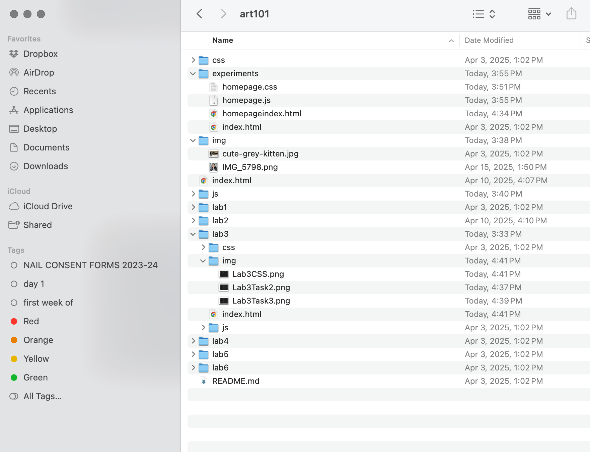
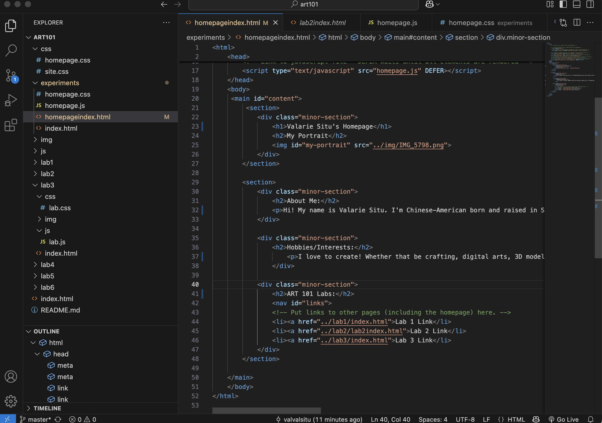
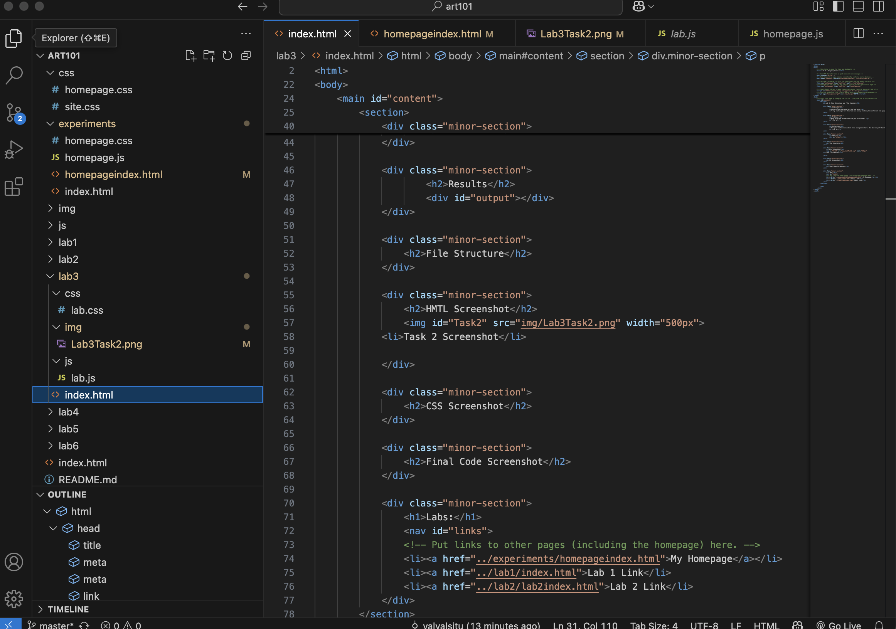

Lab 3 - File Structure and File Transfer
Challenge
Restate the challenge of the lab here.
In Lab 3, I had challenges with linking images and adding connecting webpage links. I also wanted to challenge myself with changing the background colors and fonts in the css files, which led me confusing myself with codes and files. Oops..
Problems
What problems arose? How did you solve them?
I had problems linking images and webpages in my codes and files. I realized it was caused by minor typos for example, adding the less than signs or titling images and putting them into my HTML code. In terms of adding background colors and fonts, it was fairly easy to understand and customize but I was confused on which files influenced my Homepage and Lab 3 webpages.
Reflection
Put your reflections about this assignment here. How did it go? What kind of energy did you put into the assignment?
This assignment was fun and a great learning experience. It was intimidating at first which made it hard for me to progress through this lab, but I'm thankful to have my Lab 3 partner, Austin help me reference my HTML and CSS codes. Moreover, I think the time and energy reflected in our homepages and meeting up with eachother for this lab.
Results
Though this lab took a lot of time and learning, creating and customizing my Homepage and Lab 3 was the best part of this assignment. I am better familarized with HMTL and CSS now, hopefully it will show in my future labs.
File Structure
HMTL Screenshot
 Task 2 (Left) and Task 3 (Right) Screenshot